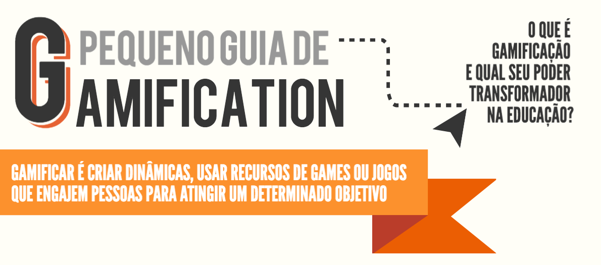

Livro: Produção de Recursos Educacionais
Introdução
Você vai iniciar, agora, um estudo voltado à produção de recursos educacionais. Já vimos Recursos Educacionais que você vai experimentar e utilizar. Neste momento, nosso foco centra-se na produção, ou seja, em como é possível produzir este tipo de recurso. E o mais importante: ao ler o material, tenha em mente que, independente da sua atuação profissional, um recurso didático não é só um material que contempla um conteúdo a ser utilizado em sala de aula...
Mas o que é um recurso didático?
Um recurso didático pode ser definido como qualquer recurso desenvolvido com uma finalidade educativa e que, por isso, pode ser utilizado na mediação do processo de ensino e aprendizagem, podendo estar organizado e ser disponibilizado em uma ou mais mídias (impressa, eletrônica ou digital) (BLEICHER, 2015).
Por isso, se você é docente, gestor ou atua em qualquer outro tipo de profissão, lembre-se: sempre pode existir um momento no qual será necessário ensinar algo a alguém e é neste momento que o recurso didático é importante. Compreender como é possível produzi-lo com qualidade e coerência e de acordo com o contexto daquela situação é o que procuramos apresentar nesta disciplina.
E agora?
A produção de um recurso didático pode ser algo muito desafiador. Primeiro, porque geralmente se trata de uma solução a ser desenvolvida para um problema concreto do professor ou do instrutor que deve dinamizar e facilitar o ensino e a aprendizagem de conteúdos e conceitos a serem transmitidos, construídos, refletidos, analisados, discutidos etc. Além de resolver este problema, nesta situação, o docente estará não em uma posição de mero consumidor, mas como um verdadeiro produtor de conhecimentos. Soma-se a isto o fato de que, de acordo com o seu público alvo, também esta pessoa deverá dominar linguagens e mídias que sejam coerentes com o contexto no qual está inserido, situação que pode ser bem difícil de resolver. Você já esteve em uma situação assim? Compartilhe com a gente! Como resolveu? Produziu algum recurso didático? Qual?
Clique aqui e dê sua opiniãoMas e como vamos fazer isso? Vamos iniciar nosso estudo com um dos temas essenciais quando se trata deste assunto: o design instrucional! Vamos lá?
2 | Princípios de Design Instrucional
Design instrucional (DI) pode ser entendido como a atividade de desenvolvimento de um conjunto de ações e objetos que atendam determinadas necessidades de aprendizagem (OZCINAR, 2009). Diz-se que sua origem remonta ao período da Segunda Guerra mundial, na qual uma equipe de psicólogos e outros profissionais buscou desenvolver métodos e materiais instrucionais para formação rápida dos milhares de soldados recrutados na época.
De lá pra cá muita coisa mudou. Avanços nas teorias de aprendizagem, nas tecnologias de informação e comunicação e na Educação como um todo ampliaram o entendimento sobre o que é Design Instrucional. A propósito, o próprio termo "instrucional", que vem do inglês "instructional", vai além da noção de instrução como um conjunto de orientações para operar uma máquina, por exemplo. Nesse contexto, o termo "instrucional" remete à ideia de planejamento, de uma sequência sistemática de conteúdos e atividades com o objetivo de construir o conhecimento, desenvolver competências, de aprender (SILVA, 2013).
Design Instrucional ou Design Educacional?
O conceito de Design Educacional costuma aparecer para representar um trabalho mais amplo, por exemplo, o projeto de um curso. Já o Design Instrucional seria em nível menor, por exemplo, planejamento de um material didático específico, como uma videoaula. Todavia, grande parte dos autores que pesquisam a área entendem o Design Instrucional como uma atividade ampla, que também inclui planejamento de cursos e projetos em nível institucional. Além disso, o termo Design Instrucional é mais comum nos diversos meios que tratam do tema (clique aqui e veja um comparativo do número de buscas no Google). Nesse sentido, nesta disciplina, trataremos Design Instrucional e Design Educacional como sinônimos.
Um dos nomes que despontam no Brasil quando se trata de Design Instrucional (DI) é Andrea Filatro. A autora, que publicou diferentes livros sobre DI e participa regularmente de eventos e cursos, afirma que o Design Instrucional é uma ação intencional e sistemática que envolve o planejamento, o desenvolvimento e a utilização de métodos e técnicas para elaboração de materiais e recursos educacionais em situações didáticas a fim de promover a aprendizagem (FILATRO, 2008). No vídeo a seguir, a autora comenta sobre o DI nos dias de hoje, desafios, usos e resistências. Assista ao vídeo
Filatro (2008) também destaca que design instrucional pode acontecer em nível macro e/ou micro. O nível macro implica em gerenciar o projeto, envolvendo a análise dos requisitos de um curso, estratégias institucionais, os objetivos de aprendizagem, possível perfil dos alunos, a avaliação do curso, etc. Já o nível micro está mais centrado na organização e adequação do conteúdo, na criação de recursos educacionais, objetos de aprendizagem que facilitem e qualifiquem o conteúdo disponibilizado ao aluno. Nesta disciplina, focaremos no nível micro, que se refere à elaboração de materiais.
E agora?
Design Instrucional é só para EaD? O design instrucional recebe destaque na Educação a Distância pelo fato de que o bom planejamento do material didático é fundamental nessa modalidade. Além do material, o ambiente virtual, as atividades e a mediação também precisam ser previamente planejadas. Ao se projetar uma solução educacional na modalidade a distância, é preciso prever os possíveis caminhos, os diferentes perfis e estilos de aprendizagem, as possíveis dúvidas e fatores que podem desmotivar o aluno a seguir em frente. Mas não seriam estas, também, preocupações do ensino presencial?
Siga em frente para conhecer alguns aspectos essenciais no design de materiais didáticos.
Elementos de um material didático
O Ministério da Educação (BRASIL, 2007) publicou um documento com Referenciais de Qualidade para Educação Superior a distância, indicando que um material didático de qualidade deve, entre outros fatores:
- atender, de forma sistemática e organizada, o conteúdo definido no
projeto político pedagógico do curso, segundo a ementa, de modo a
desenvolver habilidades e competências específicas;
- detalhar que competências cognitivas, habilidades e atitudes o
estudante deverá alcançar ao fim de cada unidade, módulo e disciplina,
oferecendo assim a oportunidade sistemática de uma autoavaliação;
- buscar integrar diferentes mídias, explorando a convergência e a
integração entre elas na perspectiva da construção do conhecimento e
interação entre os múltiplos atores desse processo;
- ser estruturado em linguagem dialógica, de modo a promover um estudo
autônomo do estudante e estimular a sua capacidade de organizar e
aprender diante de seu ritmo de desenvolvimento;
- indicar bibliografias para buscas complementares à aprendizagem,
instigando o próprio estudante a explorar mais cada assunto a partir das
suas necessidades.

Uma das formas de incorporar esses indicadores de qualidade é
por meio dos chamados elementos instrucionais. Você provavelmente já se
deparou com algum material didático que apresentava caixas de destaque,
ícones, lembretes, dicas, leituras complementares e outras seções
específicas. Tais elementos auxiliam a organizar o conteúdo de forma
lógica e atrativa para quem estuda, mas planejar os elementos
instrucionais a serem utilizados é ainda mais importante para quem está
construindo o material. Por exemplo, ao definir que o material didático
terá elementos de destaque, exemplos e reflexões, os autores do material
ficam com esses elementos em mente buscando oportunidades de
contemplá-los ao longo do material.
Além disso, vale destacar que elementos instrucionais, sozinhos, não fazem um bom material. O coração de um bom material está na linguagem. É o que você verá a seguir. Vai com fé!
![Fotografia de uma folha de revista. A folha é cinza, tem como título a esquerda na parte superior a frase 'Por que as folhas das árvores trocam de cor?, a direira a frase: 'Porque, em cada época, há uma predominância diferente de substâncias na folha, as quais refletem cores direntes. A clorofila, por exemplo, reflete o verde e absorve as outras cores. Por isso, no verão, quando há muita clorofila, a folha parece verde. Conforme as estações mudam, outras substâncias passam a ser maioria na folha (confira abaixo). "O que determina a faixa do espectro visível que um corpo reflete depende de vários fatores, mas o mais importante são o comprimento de onda da luz incidente, o tamanho e a natureza das moléculas", explixa Cláudio Furukawa, professor do Instituto de Físca da USP. ao centro, um retângulo com uma folha dividida em cores na seguint ordem: vermelha, marrom, vermelha (com as palavras ao lado: antocianina, luteína), amarela (com a palavra: licopeno), marrom (com a palavra, betacaroteno), verde (com a palavra, clorofila) e marrom. Na parte inferior, colunas descrevem as características de cada cor, na ordem: Verde: é a cor mais comum por causa do pigmento predominante, a clorofila, responsável pela absorção e proteção da energia que a planta capta. Ela contém magnésio, nitrogênio, carbono, hidrogênio e oxigênio e nutrientes que requerem muita energia da planta para continuarem existindo. Para produzir clorofila, as plantas precisam de muita luz e calor, daí o fato de as folhas serem verdes no verão. Amarelo: os carotenoides são os responsáveis pelas colorações amarela, vermelha e laranja. Eles sempre existem na planta, mas, conforme a clorofila deixa de ser produzida no outono e no inverno, ganham predominância. Esses pigmentos não necessitam de tanta energia, porque são constituídos apenas de hidrogênio, carbono e oxigênio e são mais baratos para a planta manter. Vermelho: ainda estão presentes nas folhas as xantofila (subclasse de carotenóides), que geram um amarelo e o vermelho, e as antocianinas responsáveis pela corações azul, vermelha e roxa. Eles também degradam no inverno, só que num ritmo mais devagar, de modo que sua presença passa ser notada. Já a produção de antocianinas é estimulada pela chegada do frio, com um acúmulo de açúcar na folha. Marrom: nos meses frios, acontece a senescência foliar. Conforme a temperatura a luz EA umidade caem, a árvore começa a retirar todos os nutrientes mais valiosos das folhas (e grande parte vem da clorofila). As folhas morrem porque não há como fazer fotossíntese. Ao mesmo tempo, a planta luz a energia que retirou das folhas velhas para produzir as novas, que brotaram nos meses seguintes.](arquivos/a0b4be64009067.5ac42aef8d7b4.jpg)
Por que será que algumas publicações são tão convidativas, fáceis e boas de ler?
Linguagem dialógica
Quando tratamos de materiais didáticos, além de considerar o conteúdo e a mídia, é preciso uma atenção especial à forma como nos comunicamos.
Você já leu algum livro ou assistiu a algum vídeo e teve a sensação
de que o autor estava sentado ao seu lado, conversando com você? Esse
tom de conversa, próximo da linguagem falada e recheado de perguntas que
suscitam a reflexão, é o que podemos entender como linguagem dialógica.

O professor que ensina, dentro de uma perspectiva inovadora, precisa estar em estado de aprendência.
BOHN, 2006
Na EaD, a gente diz que a educação é a distância, mas não precisa ser distante. A distância aqui é principalmente temporal. O autor de um material didático o produz em um tempo diferente do tempo em que ele será acessado. Veja o nosso caso: Sabrina e eu, Luís, estamos produzindo este material em conjunto. Este trecho, em especial, está sendo escrito por mim, Luís, em um voo de Belo Horizonte para Guarulhos (até agora, turbulências apenas no campo das ideias). Ao produzir o material, ficamos o tempo todo com você em mente e buscamos nos remeter a você. Essa é uma das formas de nos aproximarmos.
Outro ponto relevante da linguagem dialógica é que um diálogo não é um monólogo. Parece óbvio, mas como fazer para ouvir o outro sendo que o autor está em um tempo diferente do leitor? É por isso que, além da linguagem próxima, o autor deve promover a reflexão, como se esperasse uma resposta do leitor. (Em alguns casos, é possível prever formas para que o leitor se manifeste. Neste curso, nós criamos tópicos de discussão ao longo do texto que levam a um fórum, por exemplo.)
Não é à toa que a linguagem dialógica é um elemento indicador para
qualidade do material didático. Para Freire (2011, p. 47), ensinar “não
é transferir conhecimento, mas criar as possibilidades para a sua
produção ou a sua construção”. Isto significa que além de apresentar
o conteúdo de forma agradável, interessante e motivadora, o autor
precisa instigar a reflexão-ação.
Destaques da linguagem dialógica
Tom de conversa - procure escrever/falar como se estivesse conversando com o leitor/espectador. Use pronomes de tratamento, como “você”, e/ou terceira pessoa “nós”. Por exemplo: “Até aqui, vimos que a linguagem é essencial na elaboração de um material didático. No tópico a seguir, você conhecerá uma técnica de narrativas conhecida como storytelling.”
Orientação da leitura/navegação - receba o leitor com boas-vindas e direcione as ações. Por exemplo: “Veja, no vídeo que segue, a diferença entre linguagem acadêmica e linguagem dialógica.” / “Clique no link a seguir e saiba mais.” / “Participe da discussão! Acesse o fórum e compartilhe suas ideias.”
Reflexão - faça perguntas/desafios em momentos oportunos para que o leitor resgate conhecimentos prévios, relacione o que está vendo com situações reais, questione conceitos etc. Por exemplo: “Por que será que alguns conteúdos são tão agradáveis, instigantes e de fácil assimilação?"
Exemplos/casos - traga exemplos,
comparações, casos que ilustrem e problematizem os conceitos
apresentados. Cada leitor terá uma bagagem de experiências e
conhecimentos diferentes. Por isso, proponha situações que permitam
exercitar, refletir e construir o conhecimento na prática.
Cuidados com a linguagem dialógica
Informalidade excessiva - a informalidade e o humor são recursos adequados para promover a proximidade com o leitor, mas é preciso atentar para que eles não prejudiquem a compreensão ou afetem a percepção de relevância de determinado conteúdo.
Nível dos leitores - é preciso estabelecer uma linguagem adequada ao público do material sendo produzido. Um material para especialização, por exemplo, será diferente de um material para crianças. A propósito, no intuito de se aproximar com o leitor adulto, é preciso cuidar para que a linguagem não fique infantil, inclusive a linguagem visual.
Pressuposições - evite iniciar imaginando que o leitor já sabe algo, por exemplo, “como você já deve saber, o cuidado com a linguagem é crucial para qualidade de um material didático.” Para resolver essa situação, basta suprimir o primeiro trecho. Em contrapartida, você pode certamente resgatar conteúdos já apresentados anteriormente em um mesmo material/curso.
Uso excessivo da primeira pessoa do plural ou da terceira pessoa (formal) -
em alguns momentos, é oportuno utilizar a primeira pessoa do plural
(nós), no intuito de promover a sensação de proximidade entre autor e
leitor. Por exemplo, ao dizer “Até aqui vimos
os diferentes tipos de linguagens”. Porém, também é importante lembrar
que o leitor é um aprendente ativo no processo e precisa sentir isso por
meio de tratamento pessoal. Por exemplo, “No tópico a seguir, você verá alguns princípios de design gráfico.” Veja que é diferente de dizer “No tópico a seguir, veremos
alguns princípios do design gráfico.” Normalmente, se pondera em quais
momentos se espera uma ação do leitor e, assim, utiliza-se uma fala
direta ("você"), e em quais momentos espera-se promover a sensação de
que leitor e autor farão algo juntos (usando o "nós"). Além disso, há
também o uso de terceira pessoa e da impessoalidade, que é comum em
artigos acadêmicos nos quais buscamos passar credibilidade científica.
Por exemplo, se disséssemos "No tópico a seguir, serão apresentados alguns princípios do design gráfico." Note como fica distante.
Ah!
Uma dica: por mais que você esteja produzindo um material para diversas
pessoas, na maior parte dos casos, soa mais próximo dizer “você” em vez
de “vocês”. ;)
Você precisa saber
Considerando o que você já estudou até aqui sobre Design Instrucional e Linguagem dialógica, indicamos a leitura do artigo Produção de conteúdos para EaD: planejamento, execução e avaliação, disponível na sequência. Os autores fazem uma retomada de alguns conceitos, em especial no item "2.2 Linguagem dialógica instrucional".
Clique aqui para ler3 | Roteirização
Um roteiro é um plano. Um documento que orienta como algo será feito.
No vídeo a seguir, mostramos como isso pode ser feito em alguns
passos: definição do objetivo do vídeo, pesquisa de materiais,
construção do texto e definição dos elementos do vídeo. A ideia é que
você, o especialista no assunto do vídeo, possa produzir o seu próprio
roteiro, para que o vídeo faça sentido no contexto em que será usado.
Acesse aqui o template do roteiro mencionado no vídeo (e faça uma cópia, caso queira utilizá-lo): Template para roteiro de vídeo.
Façamos um paralelo com roteiro de viagem. Ao planejar uma viagem, costumamos começar listando os lugares que queremos visitar, as coisas que queremos fazer, comprar e comer. A organização da sequência de visitação desses lugares obedece a uma sequência lógica, geralmente de deslocamento físico. Não faria muito sentido ir para o norte, depois para o sul, depois voltar para o norte. Mas, quando os lugares para se visitar são próximos, o roteiro pode seguir outras lógicas: interesse, datas especiais, quantidade de pessoas, entre outros. Além da sequência que segue uma lógica, o roteiro também prevê os tempos e distâncias para cada atividade. Às vezes não é possível visitar três museus no mesmo dia. Por fim, um bom roteiro de viagem prevê também paradas para descanso e momentos livres para atividades não planejadas.
Note que um roteiro estabelece objetivos, marcos de parada,
atividades, trajetos e tempos. Um roteiro de material didático não será
lá muito diferente, principalmente, se você considerar que o material a
ser estudado será uma jornada por um conjunto de saberes e reflexões. O
leitor (entenda leitor não apenas de texto, mas leitor para qualquer
gênero textual ou não) partirá de um lugar e será guiado pelo material.
Essa navegação poderá ser linear e não linear. O
material que você está lendo, neste momento, por exemplo, segue uma
lógica linear. Por mais que existam links que permitem que você navegue
pelos capítulos de forma não linear, a sequência de apresentação sugere
uma linearidade. Esta é uma estratégia adotada para este curso.
Mas
poderíamos, por exemplo, ter módulos independentes que apareceriam
seguindo outra lógica, talvez a de interesse ou de necessidade de
aprendizagem. Essa lógica não linear é comum em
plataformas adaptativas. Dependendo dos dados captados pelo sistema
sobre você, seja por um questionário, uma avaliação diagnóstica ou sua
própria navegação, a plataforma pode lhe recomendar marcos/atividades
totalmente personalizados para o seu perfil. É como se o sistema fosse
um guia de turismo pessoal lhe indicando as melhores opções a cada passo
que você dá.
Bom, para fins de compreensão de roteiros para material didático, vamos manter o foco nos roteiros que tendem à linearidade, como livros físicos e digitais, ebooks interativos, vídeos, podcasts e apresentações de slides. Dois pensamentos cruciais em relação ao roteiro:
- o formato do roteiro estará totalmente relacionado com a mídia – um roteiro de e-book é diferente de um roteiro de vídeo, visto que os elementos de cada mídia mudam;
- a complexidade do roteiro dependerá de quem produzirá o material – se você está planejando o material, mas não será o responsável pela sua produção, o roteiro precisa ser muito bem detalhado. Mas, se você mesmo produzir o material, um esboço já pode ser suficiente para guiar a execução.
Veja, nas imagens que seguem, um exemplo com trechos de roteiro de apostila em comparativo com resultado final. Nesse caso, o texto continha indicações para o responsável pela produção (a diagramação e ilustração, aqui, foram feitas por outro profissional).
Você se lembra dos elementos instrucionais que estudou no tópico anterior? Eles podem ser definidos antes do roteiro ou ideias de elementos podem surgir ao longo do roteiro. Em todo caso, é interessante manter um padrão entre eles.
Mas, afinal, como eu faço o roteiro?
Vamos supor que trocamos algumas ideias considerando o conteúdo e o
perfil do público e definimos que o material deve ter: exemplos e casos
reais, questões de reflexão, momentos de síntese, conteúdos
complementares e sugestões de atividades práticas. Agora um tema... que
tal tipos de massas? Massa de comer mesmo! Veja como o material
poder ser diverso:
-
Ideia de roteiro 1
Iniciar apresentando os objetivos de aprendizagem / introdução com a
história breve das massas até os dias de hoje / levantar alguma questão
sobre por que existem diferentes tipos de massa (pode levar a um fórum) /
explicar a diferença entre massas recheadas e não recheadas (inserir um
esquema ou infográfico) / apresentar uma receita com exemplo de preparo
de massa / sugerir que o aluno tente fazer a massa em casa / fazer uma
síntese dos tipos de massa / indicar um conteúdo extra que relaciona
massas, molhos e vinhos.
-
Ideia de roteiro 2
Começar com uma situação problema, uma história de um casal que irá
receber os amigos para jantar / levantar alguma questão sobre qual tipo
de massa seria mais interessante / apresentar os objetivos de
aprendizagem / apresentar os diferentes tipos de massa e curiosidades
sobre sua história / voltar pra história e criar uma situação problema
na qual os personagens não sabem fazer a massa que escolheram / sugerir
uma atividade prática de pesquisa e execução de uma receita / voltar
para história já no momento do jantar, no qual as personagens contam
para os convidados a saga do jantar, resumindo os tipos de massa / um
dos personagens levanta a questão sobre qual vinho eles querem beber /
gancho para conteúdo complementar sobre combinação de massas, molhos e
vinhos.
-
Ideia de roteiro 3
Iniciar com uma pergunta problema sobre a diferença nos tipos de massa / apresentar os objetivos de aprendizagem / trazer a fala de algum especialista sobre os tipos de massa / apresentar o caso de um restaurante de massas e quais as preferidas dos clientes / mostrar a receita de uma das massas / propor uma atividade síntese de relacionar imagens dos tipos de massa com os nomes corretos / convidar o aluno para que pratique executando alguma receita / sugerir um conteúdo extra sobre combinação de vinhos e massas.
Note que as três ideias apresentam sequências e elementos diferentes, mas todas trabalham para levar o estudante/leitor a atingir um objetivo de aprendizagem, que é saber diferenciar os tipos de massa. Observe, também, que não foi indicada a mídia para cada ideia de roteiro. Se quiser, leia novamente cada ideia e imagine como ela seria em formato de uma apostila impressa, um vídeo ou recurso interativo. Dependendo da mídia, o roteiro precisa agora ser desdobrado para detalhar os aspectos necessários (assim como você exercitou no caso do roteiro de vídeo).
Aprofunde seus conhecimentos
A produção de um recurso didático pode ser feita por você mesmo ou por uma equipe especializada. Todavia, cada vez mais surgem ferramentas de autoria mais completas e fáceis de usar que promovem a autonomia nessa criação. Algumas dessas ferramentas são gratuitas, e outras, pagas. Você verá melhor esse assunto no Capítulo 6. Até lá, que tal ver esse material sobre roteiro de cursos online? Ele contempla alguns dos elementos que vimos até aqui. Ah! Observe que o recurso utilizado se trata de um material que costumamos chamar de "tela e tela". É um recurso interessante para conteúdos mais curtos e rápidos, visto que pode cansar pelo excesso de cliques.
Como criar roteiros para cursos online.Storytelling
Não é raro encontrarmos histórias, casos e exemplos ao longo dos materiais didáticos. Sejam eles textos, vídeos, áudios, jogos ou outros recursos interativos, as histórias nos ajudam a contextualizar o que está sendo estudado.
Contar histórias ou storytelling, a propósito, é uma das formas mais antigas de repassar o conhecimento entre gerações. Histórias envolvem, ilustram e nos fazem refletir. Integrar histórias no seu material didático poder ser uma excelente opção. E para isso existem diversas técnicas (técnicas de storytelling).
Histórias, mitos, livros e filmes já foram estudados, a fim de tentar
identificar padrões de narrativa que estejam relacionados com o
interesse e a atenção do público. Algumas destas formas de contar
histórias são apresentadas no vídeo que segue. Confira!
Fonte: Storytelling: A arte de Contar Histórias Memoráveis, 2018.
Dentre as apresentadas, a mais conhecida é a Jornada do Herói. Uma
análise feita por Joseph Campbell indica alguns passos comuns em
histórias de sucesso. Veja no infográfico a seguir.
![Infográfico sobre a jornada do herói: Imagem gráfica dividida em dois quadrantes: no quadrante superior o título em letras brancas e caixa alta disposto em uma faixa laranja: A fórmula da jornada do herói em 12 simples passos. No quadrante inferior, uma mandada dividida em doze partes: Compoõe o Ato 1, os passos 1 a 4 que correspondem as seguintes ações: 1: Consciência limitada de um problema - Mundo comundo. 2: Aumento da consciência - O chamado à aventura. 3: Relutância à mudança - Recusa ao chamado. 4: Superação da relutância - Encontro com o mentor. Compõe o ato 2 os passos 5 a 9. 5: Comprometimento com a muança - cruzamento limiar. 6: Experimentando a primeira mudança - testes, aliados e inimigos. 7: Preparação para uma grande mudança - Aproximação da caverna profunda. 8: Tentativa de uma grane mudança - Provação. 9: Consequências da tentativa (melhorias e retrocessos) - Recompensa. Compõe o ato 3 os passos 10 a 12. 10: Rededocação à mudança - Estrada de volta. 11: Última tentativa de uma grande mudança - Ressureição. 12: Domínio final do problema - Retorno com Elixir.](arquivos/jornada-3.png)
Fonte: Viver de Blog, 2018.
Um elemento que merece atenção em todas as histórias é que elas são feitas de altos e baixos. Quando você pensa que está tudo bem, algo acontece. Essa oscilação cria uma dinâmica na narrativa, que, associada a elementos desconhecidos que geram curiosidade, mantém a atenção do leitor/espectador.
É por isso que além de servir para criação e contação de histórias, os elementos do storytelling servem também de inspiração para construção do seu recurso didático. Veja algumas ideias:
- Promover altos e baixos: isso significa quebrar a
constante. Se o conteúdo vem numa sequência de afirmativas que se
complementam, que tal inserir um contraponto ou um questionamento sobre
tudo que foi visto até o momento?
- Instigar a curiosidade: sabe aquela cena de uma
porta entreaberta no final do corredor que você não quer que o
personagem vá ver, mas ao mesmo tempo está morrendo de curiosidade pra
saber o que tem lá? Instigar a curiosidade é instigar a ação.
- Explicitar a mudança: histórias geralmente
apresentam um estado final bem diferente do inicial. Permitir que o
leitor perceba que ele não é mais o mesmo depois da jornada facilita a
percepção de valor no processo.
- Histórias paralelas: além da narrativa central, pode haver narrativas paralelas que enriquecem o contexto. No seu material, você pode promover o mesmo fornecendo elementos extras que ampliam os horizontes da jornada.
E aí, o que mais você percebe de interessante nas técnicas de contação de histórias que podem ser aproveitadas em recursos didáticos?
Storytelling na prática!
Assista a seguir ao vídeo que os professores Crislaine e Igor produziram sobre o uso de storytelling na produção de vídeos educacionais.
4 | Gamificação
Até aqui, você pôde conhecer um pouco sobre aspectos importantes da
produção de recursos didáticos: conversamos sobre os princípios do
design instrucional, os principais elementos dos materiais didáticos,
bem como as principais noções de roteirização e do storytelling. Muito legal, não é? Mas o mais interessante vem agora, ou seja, chegou a hora de brincarmos um pouco: vamos falar de gamificação!
Mas você sabe o que este termo significa? Talvez, se nunca leu algo
sobre o tema, você poderá imaginar que "gamificar" é utilizar "games" em
um determinado contexto, certo?
Fonte: Curta Pixar - Gari's Game
Errado!
Você precisa saber
Gamificação, do inglês Gamification, é a prática de aplicar os princípios dos games em outros contextos e áreas, como negócios, saúde e vida social - e por que não na educação!? O principal objetivo é aumentar o engajamento e despertar a curiosidade dos usuários. Não é necessário criar um jogo em si, mas somente usar seus fundamentos. Aprenda mais no artigo abaixo de Paulo Vasconcellos (2016).
Artigo: O que é Gamificação? Conheça a ciência que traz os jogos para o cotidiano.
No artigo citado anteriormente, Vasconcellos (2016) faz uma afirmação importante: o autor conclui que a gamificação parte de um princípio bem básico, ou seja, é "uma constatação sobre como os seres humanos sentem-se atraídos por jogos". "Sejam eles eletrônicos ou analógicos, a verdade é que a humanidade sempre teve grande engajamento para apreciar e participar de jogos".
Você precisa saber
Acesse aqui o texto do Prof. Antônio Miguel Faustini Zarth (2017) e conheça os principais elementos da gamificação.
Texto: Fundamentos da gamificação.
Como você pôde perceber na sua leitura até aqui, um dos grandes
objetivos da gamificação é engajar, comprometer e recompensar os
usuários que participam do processo gamificado (ESPÍNDOLA, 2016). De
acordo com Espíndola (2016), por meio da gamificação é possível atingir
os seguintes resultados:
Estimula a competição saudável
A competição lida com a natureza humana que motiva as pessoas a
partir da vontade de superação (ao próximo ou a si mesmo) em algum
aspecto. Pode soar um pouco estranho, mas todas essas estratégias da
gamificação trabalham com o orgulho do usuário de poder dizer que chegou
a determinado patamar.
Gera um sentimento de conquista própria
A gamificação ajuda os usuários a ganhar confiança, conforme eles
aprendem como ter uma experiência de aprendizagem vencedora. Bons games
também desenvolvem a noção de eficiência. Ao atingir um determinado
objetivo, desperta-se um sentimento de conquista, que é importante para
estimular ainda mais o usuário a, nas próximas estratégias, dar o seu
máximo.
Possibilita a medição de desempenho
Um participante de um programa de gamificação não conseguirá perceber
sua evolução sem uma demonstração clara de seu progresso pelos níveis,
conquistas ou demais estruturas montadas para sua interação. Alguns
programas inovadores e adaptativos de aprendizagem baseados em jogos
incorporam elementos-chave da avaliação de desempenho. Com isso, é
possível avaliar e mensurar os resultados obtidos.
Maior acessibilidade
Em um bom game, todos os jogadores têm o mesmo acesso aos recursos e informações e, embora o progresso possa variar, há uma oportunidade contínua para aprender habilidades para o domínio de todas as fases do jogo.
Aprofunde seus conhecimentos
Como vimos, os fundamentos da gamificação podem ser utilizados nos mais diversos contextos. E também podem ser muito explorados para a aprendizagem. Para aprofundar-se em como a gamificação pode contribuir para a aprendizagem, leia o texto do Prof. Raul Busarello que, em sua tese de doutorado, estudou esta temática.
Interessante não é mesmo? E ao mesmo tempo: muitas informações. Vamos revisar o conteúdo? No infográfico a seguir, você encontra um pequeno guia de gamificação que resume muito bem o que vimos até aqui! Clique na imagem e leia com atenção o infográfico completo e retorne a este material sempre que precisar.

Aprofunde seus conhecimentos
Ainda sobre as questões relacionadas à gamificação na Educação, veja a entrevista com o Prof. João Mattar, que está na UC de Experimentação de Recursos Educacionais, lembra? O professor tem um livro sobre jogos, cuja resenha você pode acessar aqui. Enfim, o professor comenta na entrevista como desenvolver e executar estratégias de gamificação. O professor remete-se diretamente para a área da Educação a Distância, mas as estratégias que ele destaca facilmente podem ser aplicadas a outros contextos profissionais.
5 | Ferramentas de autoria

Você já ouviu falar na expressão "Do it yourself?" ou simplesmente DIY? Trata-se de uma expressão inglesa que significa "Faça você mesmo". Para alguns, pode ser considerada até uma filosofia de vida. Ela se popularizou na década de 1970 trazendo a ideia de que, na contramão do consumismo, há a opção de se abster das compras e você mesmo fabricar, produzir aquilo que deseja. Se você digitar a expressão no youtube, por exemplo, encontrará diversos vídeos que irão te ensinar a confeccionar presentes, decorações, roupas ou até mesmo móveis.
Na língua portuguesa, o DIY também pode ser considerado sinônimo de bricolagem, que consiste na realização de pequenos trabalhos domésticos que dispensam a utilização de serviços profissionais. Por exemplo, a pintura e personalização de um móvel decorativo antigo é ao mesmo tempo uma atividade de bricolagem como também engloba o conceito do “Faça Você Mesmo”, pois dispensa o uso de ajuda profissional. [1]
Para o nosso contexto de produção de recursos didáticos, a ideia de "Faça você mesmo" adapta-se perfeitamente ao conceito de "Ferramentas de autoria".
Na Unidade Curricular de Experimentação de Recursos Didáticos,
vocês estão vendo que, por meio da pesquisa de objetos de aprendizagem e
de recursos educacionais abertos, podemos encontrar diferentes
recursos digitais prontos e disponíveis online para uso em um contexto
educacional. Entretanto, é comum também não encontrarmos recursos
que satisfaçam completamente as nossas necessidades e precisamos,
então, desenvolver um recurso didático para uma situação de
aprendizagem. As ferramentas de autoria são uma alternativa eficaz para
esse tipo de situação. Elas permitem que você mesmo possa produzir (DO IT YOURSELF) o seu próprio recurso educacional.
Mas o que são ferramentas de autoria, afinal?
Ferramentas de autoria são programas/softwares online ou offline chamados "amigáveis", ou seja, que facilitam e agilizam a criação de recursos digitais. Elas proporcionam que o usuário comum seja autor do seu próprio material didático digital, seja ele um texto, uma atividade de aprendizagem, uma videoaula, uma animação, uma simulação, um jogo ou até mesmo um aplicativo.
Resumindo: ferramentas de autoria possibilitam que seus
usuários se tornem autores. Você se lembra do conteúdo visto em Cultura e
Linguagens Digitais? Estamos vivendo a era da cultura da
convergência em que, na web 2.0, consumidores tornam-se também
produtores. Mas quais são as vantagens de utilizarmos ferramentas de
autoria? [2]
Baixo Custo
Com estas ferramentas, é possível produzir conteúdo sem a
necessidade de contratação de uma equipe especializada, que costuma
apresentar um valor alto.
Agilidade na produção
Permite respeitar seu próprio cronograma, produzindo conteúdos rapidamente e de forma mais simples. Essa agilidade é conquistada por meio de templates, que são telas pré-organizadas para receber o conteúdo.
Facilidade de manutenção e atualização
Contratar profissionais especializados apenas para realizar pequenas alterações no conteúdo costuma gerar gastos e atrasos desproporcionais. Com ferramentas de autoria, você mesmo pode atualizar o conteúdo, sem custo adicional e sem necessidade de negociar prazos com terceiros.
No contexto educacional, servem tanto para professores desenvolverem recursos educacionais quanto para estudantes desenvolverem produtos e projetos. É possível, por exemplo, trabalhar com ferramentas de autoria para criar podcasts, sites, livros digitais, jornais, vídeos e tantos outros formatos. Para os estudantes, desenvolver atividades em ferramentas de autoria estimula o desenvolvimento de competências cognitivas, uma vez que é necessário conhecer o conteúdo didático a ser trabalhado, e socioemocionais, que valoriza o trabalho em equipe e desenvolve habilidades de comunicação, favorecendo também a construção coletiva de conhecimento.
Em plataformas de programação, professores e alunos podem deixar de ser apenas consumidores de tecnologia para serem produtores de recursos digitais, criando produtos bem elaborados, como jogos, aplicativos e pequenas animações. Nos últimos anos, diferentes ferramentas de autoria surgiram com o propósito de não exigir nenhum conhecimento técnico ou de programação do usuário para a criação de seus próprios materiais digitais, facilitando a construção de recursos nas mais diversas áreas do conhecimento e com os mais diferentes propósitos pedagógicos.
Aprofunde seus conhecimentos
A Universidade Federal do ABC Paulista (UFABC) disponibiliza uma lista de ferramentas de autoria, com as definições das possibilidades pedagógicas, exemplos de aplicação e tutoriais para o uso de cada uma. Clique no link a seguir para navegar nesta página.
Além de todas as ferramentas citadas no site indicado, há ainda o Webquest,
uma ferramenta para pesquisa dirigida, isto é, trabalho de pesquisa
orientado na web. Por meio dela, o professor incentiva e promove a
autoaprendizagem, sendo que o aluno realiza a pesquisa conforme
orientação do professor. Há, também, repositório de webquest disponibilizado de forma colaborativa. Para saber mais sobre essa ferramenta, acesse recursos da Internet para Educação: webquest; na
página você também encontra informações sobre Hot-Potates e Blog, duas
ferramentas de autoria fáceis de utilizar para variadas situações.
Dica importante
As ferramentas de autoria têm por função possibilitar e facilitar a criação de produtos digitais. Geralmente geram objetos de aprendizagem que podem ser disponibilizados como recursos educacionais abertos. Por isso, fique atento e atribua uma licença de uso para o seu recurso, pois, ao produzir um recurso como esse, é provável que ele fique disponível online ou em algum repositório. Se tiver dúvidas, consulte novamente o conteúdo estudado em "Experimentação de Recursos Didáticos".
Lembre-se de que essas são apenas algumas das ferramentas de autoria existentes e que cabe a você descobrir aquela que servirá de modo adequado ao contexto educacional no qual você está envolvido.
Na prática
Ferramentas de autoria para produção colaborativa com os estudantes:
As ferramentas de autoria podem servir para você produzir recursos didáticos, mas também podem ser muito úteis para transformar os alunos em protagonistas e possibilitar que eles desenvolvam produtos e projetos. Alguns exemplos deste tipo de recursos, você encontra nos links abaixo.
Ferramentas de autoria e produção audiovisual:
Plataformas de programação:
Todos esses recursos e muito outros você encontra no:
Especial "Tecnologia na Educação" (site porvir.com)
[1]Texto extraído de: https://www.significados.com.br/diy/.
[2]Texto extraído de: http://www.mobiliza.com.br/ferramentas-de-autoria-e-learning/.
6 | Encerramento
Você chegou ao fim deste livro, mas seus estudos sobre produção de recursos educacionais não precisam parar por aqui.
Seja como docente ou em outra atividade profissional, eventualmente precisamos elaborar materiais didáticos, instrucionais, orientativos etc. Esperamos que esta disciplina tenha contribuído para que você se sinta mais autônomo(a) para produzir seus próprios recursos.
Lembre-se de que, além dos princípios estudados, ser curioso(a) e explorar as diferentes ferramentas disponíveis é essencial para aprimorar o seu potencial criativo. Busque sempre novos aplicativos, softwares, sites, plataformas. Procure tutoriais no Youtube. Experimente!
A propósito, nós batemos na tecla da experimentação. E não é à toa! Use e abuse das técnicas que estudamos e que ainda estudará. E, claro, conte sempre com nosso apoio ao longo da especialização.
Referências
BLEICHER, S. Processos flexíveis para a produção de materiais didáticos para a educação a distância: recomendações pautadas na perspectiva interdisciplinar. 2015. 384 p. Tese (Doutorado) - Universidade Federal de Santa Catarina, Centro Tecnológico, Programa de Pós-graduação em Engenharia e Gestão do Conhecimento, Florianópolis, 2015 Disponível em: <http://www.bu.ufsc.br/teses/PEGC0399-T.pdf>
BOHN, H. I. . Maneiras inovadoras de ensinar e aprender: a necessidade de des(re)construção de conceitos. In: Wilson J. Leffa. (Org.). O professor de línguas estrangeiras : construindo a profissão. 2da ed.Pelotas, RS.: EDUCAT, 2006, v. , p. 106-123.
BONNICI, P. A linguagem visual. Lisboa: Destarte, 2001.
BRASIL. Referenciais de qualidade para educação superior a distância. Brasília: Secretaria de Educação a Distância - MEC 2007
BUSARELLO, R. Gamificação em histórias em quadrinhos hipermídia: diretrizes para construção de objeto de aprendizagem acessível. 2016. 352 p. Tese (Doutorado) - Universidade Federal de Santa Catarina, Centro Tecnológico, Programa de Pós-Graduação em Engenharia e Gestão do Conhecimento, Florianópolis, 2016. Disponível em: <http://www.bu.ufsc.br/teses/PEGC0455-T.pdf>
CEZZAR, J. O que é design gráfico?. Nova York: AIGA: The Professional Association for Design. 2017. Disponível em: <https://www.aiga.org/guide-whatisgraphicdesign>. Acesso em 25 de junho de 2018.
ESPÍNDOLA, R. O que é a gamificação e como ela funciona?. Edools, 2016. Disponível em: < https://www.edools.com/o-que-e-gamificacao/>. Acesso em 25 de junho de 2018.
FILATRO, A. Design instrucional na prática. São Paulo: Pearson Education do Brasil, 2008. 173p.
FREIRE, P. Pedagogia da autonomia: saberes necessários à prática educativa. São Paulo: Paz e Terra, 2011.
JOBS, S. Apple´s one-dollar-a-year man. Fortune Magazine. 2000. Disponível em: <https://money.cnn.com/magazines/fortune/fortune_archive/2000/01/24/272277/index.htm>. Acesso em 27 de junho de 2018.
OZCINAR, Z. The topic of instructional design in research journals: A citation analysis for the years 1980-2008. Australasian Journal of Educational Technology, 2009, n. 25(4), p. 559-580. Disponível em: <https://ajet.org.au/index.php/AJET/article/view/1129 >. Acesso em: 20 jul. 2018.
PESCADOR, C. M. Resenha: Games em educação: como os nativos digitais aprendem, de João Mattar. Conjectura, Caxias do Sul, v. 15, n. 2, p. 191-195, maio/ago. 2010.
SILVA, A. Diretrizes de design instrucional para elaboração de material didático em EaD: uma abordagem centrada na construção do conhecimento. 2013. 179 p. Dissertação (Mestrado) - Universidade Federal de Santa Catarina, Centro Tecnológico, Programa de Pós-Graduação em Engenharia e Gestão do Conhecimento, Florianópolis, 2013. Disponível em: <http://www.bu.ufsc.br/teses/PEGC0286-D.pdf>
VASCONCELLOS, P. O que é Gamificação? Conheça a ciência que traz os jogos para o cotidiano. Techtudo. 2016. Disponível em: < http://www.techtudo.com.br/noticias/noticia/2016/07/o-que-e-gamificacao-conheca-ciencia-que-traz-os-jogos-para-o-cotidiano.html>. Acesso em 25 de junho de 2018.
ZARTH, A. M. F. IFSC.ME - um avea gameficado para ensino baseado em competências. 2017. Trabalho de Conclusão de Curso. Instituto Federal de Santa Catarina, Centro de Referência em Formação e EaD (CERFEAD) , Pós-Graduação lato sensu em Formação Pedagógica para a Docência na Educação Profissional e Tecnológica. Florianópolis, 2017.
Ficha técnica
|
Título |
Produção de Recursos Didáticos |
|
Autoria (2018) |
Luis Henrique Lindner |
|
Revisão do conteúdo (2020) |
Crislaine Gruber |
|
Adaptação (2021) |
Crislaine Gruber |
|
Design Instrucional |
Josane Mittmann |
|
Revisão textual e normativa (2018) Revisão textual e normativa (2021) |
Denise de Mesquita Corrêa Cláuberson Carvalho |

Este trabalho está licenciado com uma Licença Creative Commons - Atribuição-NãoComercial-CompartilhaIgual 4.0 Internacional.